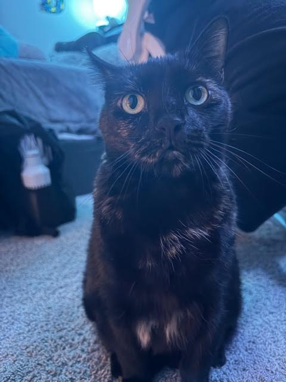
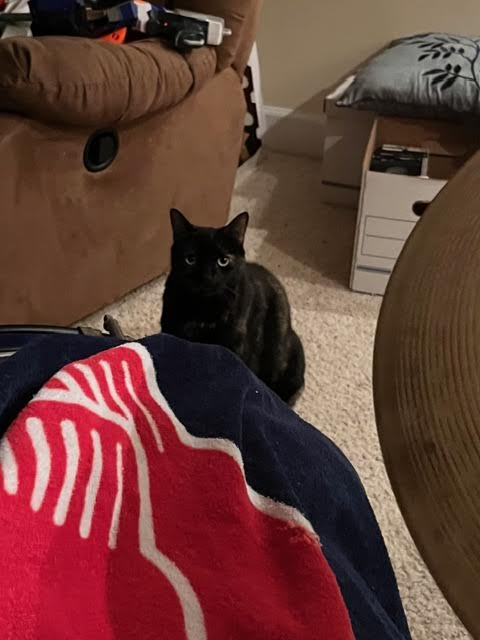
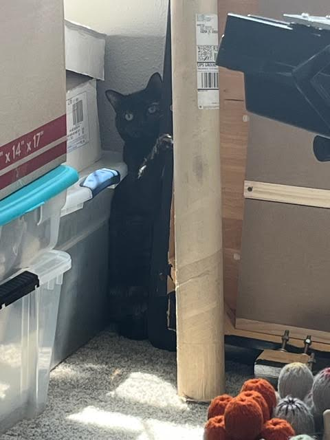

Traits Around the House
Katie is a tortoiseshell cat, which always comes with sassy behavior while waiting for meals, or early mornings screaming for attention. Despite how awful this sounds, she still is very loving and charismatic.
Fights
I have another cat. His name is Ozzy, and Ozzy and Katie fight a lot. Katie smacks Ozzy every time he walks by. They have never really gotten along, and unfortunetly I dont think they ever will
Favorite Memories
- Moving down to FL from VA- 13 hour road trip with my cat.
- Sitting with her on Christmas morning waiting for my parents to wake up
- Seeing her waiting for me after my first semester of university.
Favorite Snacks
- Catnip
- Party Mix
- Fancy Feast
Gallery


